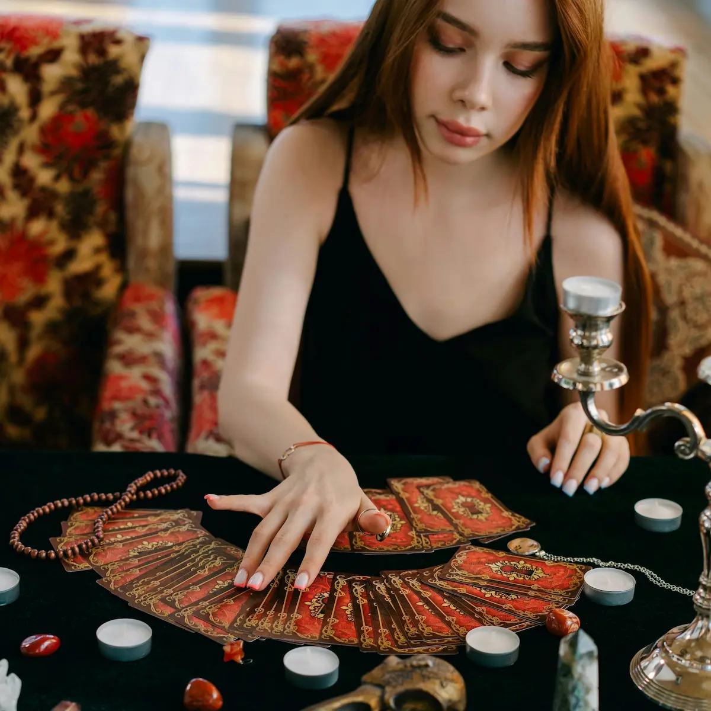

Amarres y lecturas
Únicos a Tu Medida
¡Descubre el poder de la magia ancestral y transforma tu vida con los servicios de un experto en amarres y rituales! Si sientes que algo te impide alcanzar la felicidad, el éxito o el amor que mereces, este es el momento de tomar el control.
Consulta personalizada y virtual¿Por qué Elegir al Maestro?
Descubre el poder que ya te pertenece. ¡Reserva tu sesión ahora!
Magia Ancestral y Auténtica: Más de 20 años canalizando energías reales y ayudando a cientos de personas a transformar sus vidas.
Lecturas 100% Personalizadas: Conecta con respuestas específicas a tus dudas más profundas. ¡Nada genérico, todo está diseñado para ti!
Resultados Probados: Experiencias de clientes que han recuperado el equilibrio en su vida gracias a la sabiduría única del maestro medium.
somos expertos en
videncia
Lectura de Cartas
Primera consulta totalmente gratis
Poderosas lecturas
de amor
Nuestra mision es que ya sea que busques recuperar una relación perdida, atraer el amor verdadero, aumentar tu prosperidad o protegerte de malas energías, cada ritual es personalizado con la intención de lograr tus deseos más profundos. Confía en la experiencia de un verdadero conocedor de las fuerzas místicas, y deja que el universo trabaje a tu favor. No esperes más para alcanzar la vida que siempre has soñado. ¡Haz tu consulta hoy y abre las puertas a un futuro lleno de posibilidades!
Consulta Gratis Ahora!

Servicios
Preguntas frecuentes
¿Qué puedo esperar de una lectura psíquica?
Una lectura psíquica ofrece información sobre su vida y su futuro. posibilidades y respuestas a preguntas personales.
¿Cómo puedo prepararme para mi lectura psíquica?
Prepárese relajándose, estableciendo una intención y anotando cualquier preguntas que puedas tener.
¿Qué debo preguntar durante mi lectura psíquica?
Haga preguntas específicas y abiertas sobre áreas como carrera, relaciones y crecimiento personal.
¿Son precisas las lecturas psíquicas?
La precisión depende de su apertura y de las preguntas. Lo mejor es utilizar las lecturas como guía.